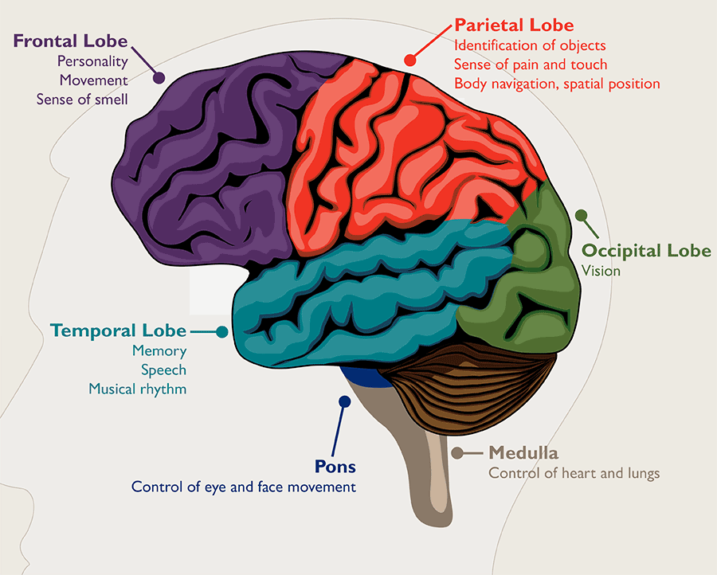

Brain Tumor

SYMPTOMS:
Symptoms of brain tumors depend on the location and size of the tumor. Some tumors cause direct damage by invading brain tissue and some tumors cause pressure on the surrounding brain. You’ll have noticeable symptoms when a growing tumor is putting pressure on your brain tissue.
- vomiting
-
blurred vision or double vision
-
confusion
-
seizures (especially in adults)
-
weakness of a limb or part of the face
-
a change in mental functioning
DIAGNOSIS
- MRI of the head
If you have an MRI of your head, a special dye can be used to help your doctor detect tumors. An MRI is different from a CT scan because it doesn’t use radiation, and it generally provides much more detailed pictures of the structures of the brain itself.
-
Angiography
This study uses a dye that’s injected into your artery, usually in the groin area. The dye travels to the arteries in your brain. It allows your doctor to see what the blood supply of the tumors looks like. This information is useful at the time of surgery.
-
Skull X-rays
Brain tumors can cause breaks or fractures in the bones of the skull, and specific X-rays can show if this has occurred. These X-rays can also pick up calcium deposits, which are sometimes contained within a tumor. Calcium deposits may be in your bloodstream if your cancer has moved to your bones.
-
Biopsy
A small piece of the tumor is obtained during a biopsy. A specialist called a neuropathologist will examine it. The biopsy will identify if the tumor cells are benign or malignant. It will also determine whether the cancer originated in your brain or another part of your body.
TREATMENT
The most common treatment for malignant brain tumors is surgery. The goal is to remove as much of the cancer as possible without causing damage to the healthy parts of the brain. While the location of some tumors allows for easy and safe removal, other tumors may be located in an area that limits how much of the tumor can be removed. Even partial removal of brain cancer can be beneficial.
Risks of brain surgery include infection and bleeding. Clinically dangerous benign tumors are also surgically removed. Metastatic brain tumors are treated according to guidelines for the type of original cancer.
Surgery can be combined with other treatments, such as radiation therapy and chemotherapy.
Physical therapy, occupational therapy, and speech therapy can help you to recover after neurosurgery.